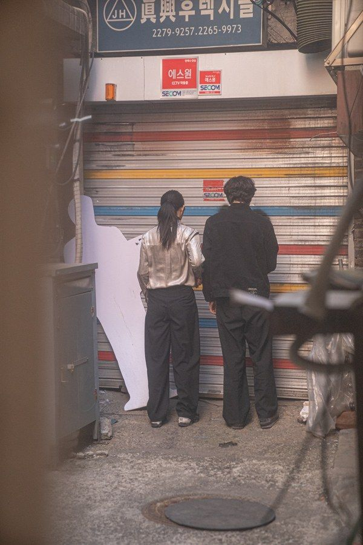

재개발로 사라져 가는 을지로 입정동을 걷는 이동형 공연. 관객은 큐레이터를 따라 골목을 걸으며 곳곳에 놓인 물건과 조각상이 된 퍼포머, 전시된 소리들을 만나고, 여러 시간이 뒤섞인 공연과 해프닝을 지나며 사라지는 공간을 '감각'한다. 배우들은 큐레이터이자 움직이는 조각상, 유적 발굴가가 되어 사라져 가는 흔적을 붙잡는 '살아 움직이는 박물관'을 만든다.
2022.3.3–4 / 입정동 일대 - 거,그,기·그린피그·미미프로젝트 제작
구성: 박현지, 송윤아, 양석진, 이예진, 정채민, 최영미
글: 이예진
연출: 박현지
안무: 양석진, 정채민
출연: 김원태, 박수빈, 박유진, 송윤아, 양석진, 이동영, 이승훈, 이예진, 이주형, 이지원, 정양아, 정연종, 정채민, 최영미, 황미영
그래픽: 김영선
영상·사진: 현석현
진행: 정유진, 주은길
제작: 거,그,기, / 그린피그 / 미미프로젝트
이전: 바바리맨-킬라이크아이두 | 다음: 꽃피는 정거장-흔적
아카이브로 돌아가기 | 아무 작품이나
발행일 2026.11.13